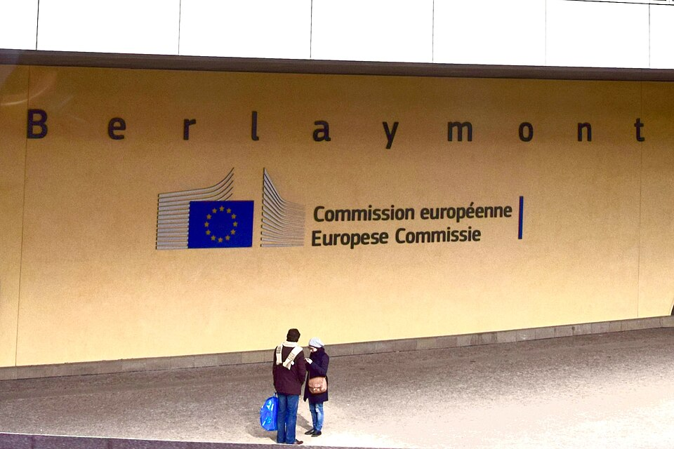

Executive Summary
이 글은 레딧이 2026년 9월 30일 내놓은 두 건의 공지를 읽는다. 누구나 주소만 알면 글 목록을 받아 볼 수 있던 RSS가 11월 13일에 끊기고, 앱과 봇이 쓰던 공개 API는 2027년 3월에 완전히 닫힌다. 레딧이 댄 이유는 하나다. RSS가 대규모 스크래핑과 자동화된 악용의 통로가 됐다는 것이다.
같은 회사의 다른 창구는 그대로 열려 있다. AI 학습 데이터 라이선스가 포함된 기타 매출은 2026년 2분기에 4,300만 달러로, 전년 같은 분기보다 24% 늘었다. 다만 레딧의 2분기 전체 매출 8억 500만 달러에 견주면 5%를 겨우 넘는 몫이다. 이 돈이 탐나서 문을 닫았다고 읽기에는 액수가 작다. 바뀌는 것은 당장의 매출이 아니라 같은 데이터가 흐르는 길의 모양이다.
1절부터 4절까지는 레딧 공지와 이를 전한 보도, 그리고 2024년 크라우드탱글 사례에 적힌 사실이다. 5절은 그 사실을 데이터를 다루는 사람의 눈으로 다시 읽은 이 글의 해석이다.
주요 수치
이번 공지에 붙은 숫자는 네 개로 추릴 수 있다. 앞의 두 개는 무엇이 언제 닫히는지를, 뒤의 두 개는 그 문이 닫힐 때 어느 쪽이 얼마나 영향을 받는지를 말한다.
출처: TechCrunch(2026-09-30), MediaNama(2026-10).
11월 13일
RSS가 끊기는 날
커뮤니티 운영 밖의 쓰임에는 대체재가 없다고 레딧이 밝혔다
2027년 3월
공개 API가 완전히 닫히는 달
날짜는 아직 밝히지 않았다. 신규 신청은 10월 31일에 마감된다
4,300만 달러
AI 라이선스가 든 기타 매출
2026년 2분기. 24% 늘었지만 전체 매출 8억 500만 달러의 5%다
1만 4천 개
등록을 마친 앱과 봇
9월 30일 기준. 2027년 1월 12일부터 등록 안 한 쪽은 차단된다
무엇이 언제 닫히나
레딧은 9월 30일 두 곳에 공지를 올렸다. 커뮤니티 운영자가 모이는 r/modnews와 개발자가 모이는 r/redditdev다. 두 공지가 함께 닫는 것은 두 가지다. 하나는 RSS로, 주소 끝에 몇 글자만 붙이면 로그인 없이도 특정 게시판의 새 글 목록을 기계가 읽을 수 있는 형식이다. 다른 하나는 공개 API로, 앱과 봇이 레딧에 글을 요청해 받아 가던 통로다.
한꺼번에 닫히지는 않는다. 공지한 날부터 반년에 걸쳐 단계마다 다른 문이 잠긴다. 아래는 보도에 적힌 날짜를 순서대로 놓은 것이다.
| 날짜 | 무슨 일이 일어나나 |
|---|---|
| 2026-09-30 | r/modnews와 r/redditdev에 공지 게시 |
| 2026-10-31 | 공개 API 접근을 새로 신청받는 일이 끝난다 |
| 2026-11-13 | RSS 피드가 사이트 전체에서 멈춘다 |
| 2026-11-30 | 앱 이전 지원 프로그램 등록이 마감된다 |
| 2027-01-12 | 등록하지 않은 앱과 계정의 접근이 끊기기 시작한다 |
| 2027-03 | 공개 API가 모두에게 닫힌다. 날짜는 아직 밝히지 않았다 |
▲ 출처: TechCrunch(2026-09-30), MediaNama(2026-10), TechRepublic. 2027년 3월은 모든 보도에서 달까지만 확인된다.
레딧은 옮겨 갈 곳도 함께 내놨다. 쓰던 앱을 개발자 플랫폼으로 옮기라며 총 100만 달러 규모의 이전 지원 프로그램을 걸었다. 자격을 갖춘 앱 한 개에 1,000달러다. 9월 30일까지 등록을 마친 앱과 봇은 1만 4천 개가 넘는다. 등록을 마치면 새 플랫폼에서 계속 돌릴 수 있고, 마치지 못하면 2027년 1월 12일부터 차례로 끊긴다.
같은 공지에 조용히 끼어 있는 변경이 하나 더 있다. 옛 화면인 Old Reddit에 들어갈 수 있는 사람을 최근 6개월 안에 활동한 로그인 사용자로 좁힌다는 것이다. 레딧은 이 조치의 이유로도 스크래핑과 자동화 트래픽을 들었다. 로그인하지 않은 사람에게 열려 있던 또 하나의 입구가 좁아지는 셈이다.
레딧이 밝힌 사유, 그리고 같은 분기의 숫자
공지에 적힌 사유는 짧다. RSS가 "대규모 스크래핑과 자동화된 악용의 일반적 통로"가 됐다는 것이다. 이 설명은 사실에 가깝다. RSS는 로그인도 인증도 요구하지 않고, 기계가 읽기 좋은 형식으로 글 목록을 통째로 내준다. 대량 수집을 막겠다는 회사 입장에서는 가장 먼저 잠글 문이 맞다.
다만 같은 데이터를 대량으로 가져가는 길이 하나 더 열려 있다. 레딧은 2026년 2분기 실적에서 광고를 뺀 기타 매출을 4,300만 달러로 적었다. 이 항목의 중심은 AI 회사와 맺은 데이터 라이선스이고, 가장 큰 고객은 OpenAI와 구글이다. 전년 같은 분기보다 24% 늘었다.
이 숫자를 혼자 떼어 놓고 보면 과장하기 쉽다. 같은 분기 레딧의 전체 매출은 8억 500만 달러였고 그중 광고가 7억 6,200만 달러다. 데이터 라이선스가 든 항목은 전체의 5%를 겨우 넘는다. 광고가 1년 사이 64% 자라는 동안 이쪽은 24% 자랐으니 성장 속도도 더 빠르지 않다. 레딧이 당장의 라이선스 수입이 아까워 RSS를 껐다는 읽기는 이 비율 앞에서 힘을 잃는다.
그래서 이 두 숫자를 나란히 놓을 때 보이는 것은 동기가 아니라 구조다. 한쪽 통로는 날짜를 박아 닫히고, 다른 쪽 통로는 계약서와 함께 남는다. 액수가 작다는 사실은 오히려 한 가지를 더 말해 준다. 레딧이 지키려는 것이 지금 들어오는 4,300만 달러라면 작은 싸움이지만, 앞으로 이 데이터를 쓰려는 모든 곳이 거쳐야 할 관문이라면 작은 싸움이 아니다. 레딧 스스로도 공시에서 이 사업을 이력이 짧은 새 수입원으로 적으면서, 구글·OpenAI와의 계약이 갱신되지 않으면 빠르게 줄어들 수 있다고 위험을 밝혀 뒀다.
▲ 출처: 레딧 2026년 2분기 실적 수치를 TechCrunch·MediaNama 보도에서 옮겼다.
계약 쪽 문은 이번에 새로 생긴 것이 아니다. 레딧은 2024년 2월 구글과, 같은 해 5월 OpenAI와 데이터 라이선스를 맺었다. 보도된 금액은 구글이 연 6,000만 달러 안팎, OpenAI가 연 7,000만 달러 안팎이다. 두 금액 모두 회사가 확인해 준 수치가 아니라 2차 보도에 실린 것이라 그대로 받기는 어렵다. 다만 상장 당시 공개한 계약 잔액이 2억 달러를 넘었다는 점은 이 사업이 실험 단계를 지났음을 말해 준다.
'계약'이라는 말도 2년 전에 이미 나왔다. 2024년 5월 9일 공개 콘텐츠 정책을 고치면서, 레딧에 올라온 공개 글로 제품을 만들거나 키우려는 회사는 레딧과 계약을 맺어야 한다고 못 박았다. 대량 수집을 정책에 동의한 상대로 좁히겠다는 것이 당시 설명이다. 같은 글에는 한 문장이 더 있었다. 사용자와 모더레이터, 연구자처럼 선의를 가진 비상업 이용자는 그대로 접근할 수 있다는 문장이다. 2년 뒤의 이번 공지는 바로 그 비상업 이용자가 쓰던 통로를 닫는다.
돈을 내지 않고 가져가는 길에 대해서는 레딧이 법정으로 갔다. 2025년 6월 앤트로픽을 제소했고, 같은 해 10월 22일에는 뉴욕 남부연방지방법원에 퍼플렉시티와 데이터 수집 업체 세 곳을 함께 제소했다. 구글 검색 결과를 우회로 삼아 레딧 글을 긁어 갔다는 것이 요지다. 레딧 측은 구글만 색인할 수 있는 숨긴 글을 만들어 두고 그것이 상대 서비스에 나타나는지 확인했다고 주장했고, 경고장을 보낸 뒤 오히려 레딧 인용이 마흔 배로 늘었다고 적었다. 모두 원고 측 주장이고 법원이 확정한 사실이 아니다.
피고 쪽 반박은 이 사건의 성격을 다르게 짚는다. 퍼플렉시티는 자사가 레딧 글로 모델을 학습시키지 않고 공개된 토론을 요약하고 인용할 뿐이라 라이선스를 맺는 것 자체가 불가능하다고 했다. 그러면서 이 소송을 "공개 데이터가 상장사 사업 모델의 큰 부분이 될 때 벌어지는 일의 슬픈 예"라고 불렀다. 리투아니아 업체 옥시랩스는 누구도 자기 것이 아닌 공개 데이터의 소유권을 주장할 수 없다고 했다. 양쪽이 같은 낱말을 서로 다른 뜻으로 쓰고 있다. 한쪽에게 '공개'는 값을 매길 수 있는 자산이고, 다른 쪽에게는 값을 매길 수 없는 공유지다.
이 말다툼은 올해 한 고비를 넘었다. 퍼플렉시티는 2026년 1월 2일 소를 각하해 달라는 신청을 내면서, 누구나 볼 수 있는 웹 페이지를 긁는 일은 미국 컴퓨터 사기·남용법으로 처벌할 수 없다고 본 hiQ 대 링크드인 판례를 근거로 들었다. 법원은 7월 31일 이 신청을 대부분 받아들이지 않았다. 레딧 글이 실린 구글 검색 결과 앞에 구글이 세워 둔 봇 차단 장치를, 디지털 밀레니엄 저작권법이 말하는 '접근을 통제하는 기술적 조치'로 본 것이다. 사람이 눈으로 읽을 수 있는 글이어도 기계를 가려내는 장치가 앞에 서 있으면, 그 장치를 돌아가는 일은 따로 따진다는 뜻이다.
부당이득과 부정경쟁 주장은 이때 기각됐고, 누가 무엇을 가져갔는지에 대한 판단은 아직 남아 있다. 그래도 각하 신청이 깨진 자리에 남은 문장은 분명하다. 주소가 열려 있다는 사실만으로 가져갈 권리가 생기지는 않는다.
연구 경로는 남지만 아무나 못 들어간다
초기 보도 여럿이 "연구자도 끊긴다"는 말로 읽혔다. 이 문장은 절반만 맞다. 레딧에는 공지보다 먼저 만들어 둔 학술 연구용 경로가 따로 있고, 이번 조치 뒤에도 그 경로는 남는다. Reddit for Researchers라는 이름의 프로그램이다. 레딧은 개발자용 도구를 연구에 쓸 수 없다고 못 박으면서, 레딧 데이터로 연구를 하는 공식 경로는 이 프로그램뿐이라고 안내한다.
남는다는 말이 쉽게 들어갈 수 있다는 뜻은 아니다. 레딧이 요구하는 조건을 늘어놓으면 문의 두께가 보인다.
- • 인증받은 대학에 소속돼 있을 것. 신청은 기관 이메일로만 받는다
- • 연구 목적과 필요한 데이터를 적은 제안서를 낼 것. 보려는 게시판 이름까지 밝혀야 한다
- • 연구윤리심의위원회의 승인이나 면제 확인서를 낼 것
- • 지도교수나 학과장, 연구처 책임자 같은 기관 후원자의 보증을 받을 것
- • 영리 목적이 아닐 것. 받은 데이터를 다른 사람에게 넘기지 않을 것
문을 통과한 뒤에 받는 것이 무엇인지도 공식 안내에 적혀 있다. 구글 빅쿼리 위에 올려 둔 데이터셋이고, 담긴 범위는 지난 5년치다. 다만 6개월 늦춰진 분량까지만 보인다. 갱신은 한 달에 한 번이고, 그 사이 글쓴이가 지운 글은 빠진 채로 들어온다. 사용료는 없지만 비상업 학술 연구라는 조건이 붙는다. 지난주에 벌어진 일을 이번 주에 따라가야 하는 사람에게 이 경로는 대체재가 되지 못한다.
한동안 쓰지 않거나 조건이 끊기면 접근이 회수된다. 대학 바깥에서 혼자 연구하는 사람, 영리 뉴스룸에 소속된 기자, 여론을 읽는 도구를 만들어 파는 회사는 이 조건을 애초에 맞출 수 없다. 끊기는 선은 연구를 하느냐 마느냐가 아니라 보증과 승인을 받았느냐에 그어진다.
모더레이터는 사정이 조금 낫다. 레딧은 RSS로 알림을 받던 커뮤니티 운영자에게 개발자 플랫폼의 디스코드 연동 앱으로 옮기라고 안내했다. 대체재가 있는 쪽이다. 그런데 회사가 직접 밝힌 문장은 그 바깥을 가리킨다. 커뮤니티 운영이 아닌 용도로 RSS를 쓰던 사람에게는 대신할 것이 없다는 것이다. 좋아하는 게시판을 피드 리더로 구독하던 사람, 특정 낱말이 올라오면 알림을 받던 1인 개발자가 여기에 해당한다.
이 공지를 다룬 인도 매체 미디어나마는 두 공지 어디에도 연구 이야기가 없다는 점과, 상업용 데이터 접근 가격을 공개할지 아니면 건마다 따로 협상할지 밝히지 않았다는 점을 함께 짚었다. 값이 공개되지 않으면 누가 얼마에 들어왔는지 바깥에서는 알 수 없다. 끊기는 쪽 명단만 공개되고 들어오는 쪽 명단은 공개되지 않는 구조다.
메타가 크라우드탱글을 닫았을 때
누구나 쓰던 창구가 닫히고 승인받은 사람만 들어가게 되면 어떻게 되는지는 이미 한 번 측정됐다. 메타는 2016년에 사들인 크라우드탱글을 2024년 8월 14일에 껐다. 페이스북과 인스타그램에서 어떤 글이 얼마나 퍼지는지 보여 주던 도구였고, 허위정보와 선거 개입을 추적하던 연구자와 기자가 주로 썼다.
독립기술연구연합은 종료 발표 뒤 설문을 돌렸다. 언론사와 대학, 시민단체를 포함한 34개 조직에서 36건의 응답을 받았고, 그중 32건이 이 종료가 자기 일에 지장을 준다고 답했다. 백분율로는 88%다. 응답 가운데는 진행하던 연구를 수정하거나 접기로 했다는 사례도 있었다. 중단 시점이 미국 대선 석 달 전이라는 점도 함께 비판받았다.
메타가 아무것도 내놓지 않은 것은 아니다. 콘텐츠 라이브러리라는 대체 도구를 열었다. 그런데 그 문의 모양이 이번 Reddit for Researchers와 닮았다. 같은 설문에서 콘텐츠 라이브러리 접근을 신청했다고 밝힌 응답은 열한 건이었고, 실제로 받았다는 응답은 그중 네 건이었다. 받은 쪽도 실시간에 가까운 데이터를 보기 어렵고 내려받기가 막혀 있다고 적었다. 영리 뉴스룸은 아예 들어갈 수 없었다. 도구가 사라진 것이 아니라 들어가는 자격이 바뀌었고, 그 자격을 못 채운 조직의 일이 멈췄다.
준비할 시간을 얼마나 줬는지도 견줘 볼 만하다. 메타는 2024년 3월에 종료를 알리고 8월 14일에 껐다. 공지와 실제 종료 사이에 다섯 달이 있었다. 이번에 RSS에 주어진 시간은 9월 30일부터 11월 13일까지, 여섯 주 남짓이다. 공개 API는 2027년 3월까지라 크라우드탱글 때와 비슷한 여유가 있다. 먼저 발을 굴러야 하는 쪽은 피드 리더와 알림 봇을 쓰던 사람이다.
두 사건의 차이도 분명히 해 두는 편이 낫다. 메타는 특정 도구 하나를 껐고, 레딧은 누구나 쓰던 표준 형식 하나와 공개 API를 동시에 닫는다. 대신 레딧에는 메타에 없던 사정이 있다. 같은 데이터를 돈 받고 파는 사업이 이미 매출에 항목으로 잡혀 있다는 점이다. 크라우드탱글이 닫힐 때 그 자리에 값표가 붙지는 않았다.
페블러스가 이 변화를 주목하는 이유
레딧 데이터가 어디로 흐르는지는 이 블로그가 전에도 다룬 주제다. 값이 매겨지는 것은 대체하기 어려운 브랜드 코퍼스뿐이고 나머지는 정산 원장에 이름을 올리지 못한 채 무료 학습 데이터로 남는다는 구조를 짚은 적이 있다. 이번 공지는 그 구조에서 한 칸 더 나아간 사건이다. 값이 매겨진 쪽만 남기고 값이 매겨지지 않은 길은 아예 막는다.
데이터를 다루는 입장에서는 접근권과 함께 바뀌는 것이 하나 더 있다. 확인할 수 있느냐다. 주소가 열려 있을 때는 누구든 같은 주소로 가서 같은 글을 받아 보고, 어떤 모델이 무엇을 먹었는지 바깥에서 비슷하게 재현해 볼 수 있었다. 계약으로 흐르기 시작하면 그 자리에 남는 것은 계약 당사자의 설명뿐이다. 제3자는 범위도 품질도 치우침도 직접 열어 볼 수 없다.
규제는 반대 방향으로 움직이고 있다. 유럽연합 집행위원회가 2025년 12월 5일 디지털서비스법으로 처음 매긴 과징금은 X에 대한 1억 2천만 유로였는데, 세 가지 위반 사유 가운데 하나가 연구자의 공개 데이터 접근을 불필요한 장벽으로 막았다는 것이다. 플랫폼이 공개 데이터를 연구자에게 열어야 한다는 조항을 근거로 삼았다. 한쪽에서는 공개 창구를 닫고 다른 한쪽에서는 그 창구를 여는 일을 의무로 매긴다.

페블러스가 AI-Ready Data를 이야기할 때 되풀이하는 말이 있다. 출처가 기록되지 않은 데이터 위에서는 검증도 검증이 아니다. 모델이 좋은 답을 내는지는 써 보면 알 수 있지만, 그 답이 무엇을 근거로 나왔는지는 재료에 기록이 없으면 되짚을 수 없다. 레딧 사례가 보여 주는 것은 그 기록을 남길 권한이 이제 계약서 안으로 들어간다는 사실이다. 학습 데이터의 출처를 묻는 규정이 늘어나는 동안, 그 물음에 답할 재료는 계약 당사자 바깥에서 사라진다.
그래서 이번 공지가 남기는 질문은 따로 있다. 우리가 쓰는 모델이 무엇으로 배웠는지를, 그 모델을 만든 회사의 말이 아닌 방법으로 확인할 길이 몇 개나 남아 있는가. 레딧은 그 길 하나가 닫히는 자리다. 크라우드탱글은 닫힌 뒤에 무슨 일이 벌어지는지를 2년 먼저 보여 줬다.
여기까지 읽어 주셔서 감사하다. 공지 일정과 수치는 TechCrunch와 MediaNama 보도에서, 학술 연구용 경로의 조건은 레딧 공식 안내에서 확인할 수 있다. 여러분의 팀이 쓰는 데이터 가운데 공개 주소로 받아 오는 것이 몇 개이고 계약으로 받아 오는 것이 몇 개인지 한번 세어 보시고 알려 주시면 좋겠다.
참고문헌
공지 보도
- 1.TechCrunch. (2026). "Reddit is killing RSS feeds, ending public API access because of AI bots." 2026-09-30.
- 2.MediaNama. (2026). "Reddit to shut RSS feeds, close public API as AI bots scrape its data." 2026-10.
- 3.The AI Insider. (2026). "Reddit Ends RSS Feeds and Public API, Tightening Control Over Data Prized by AI Firms." 2026-10-02.
- 4.TechRepublic. (2026). "Reddit RSS and Public API Shutdown: Key Deadlines."
공식 문서·소송
- 5.Reddit. "Reddit for Researchers Program." Reddit Help.
- 6.TechCrunch. (2024). "Reddit locks down its public data in new content policy, says use now requires a contract." 2024-05-09.
- 7.Search Engine Land. (2025). "Reddit sues Perplexity, SerpApi over scraping Google Search data." 2025-10.
- 8.Loeb & Loeb LLP. (2026). "Reddit Inc. v. SerpApi LLC." 2026-08. (2026-07-31 뉴욕 남부연방지방법원 각하 신청 결정 요약)
- 9.European Commission. (2025). "Commission fines X €120 million under the Digital Services Act." 2025-12-05.
- 10.Reddit, Inc. (2026). "Q2 2026 Earnings Press Release." Form 8-K, SEC EDGAR.
크라우드탱글 선례
- 11.Coalition for Independent Technology Research. (2024). "Blocking our Right to Know: Surveying the Impact of Meta's CrowdTangle Shutdown."
- 12.NPR. (2024). "Meta shutters tool used to fight disinformation, despite outcry." 2024-08-14.
- 13.Tech Policy Press. (2024). "Researchers Consider the Impact of Meta's CrowdTangle Shutdown."